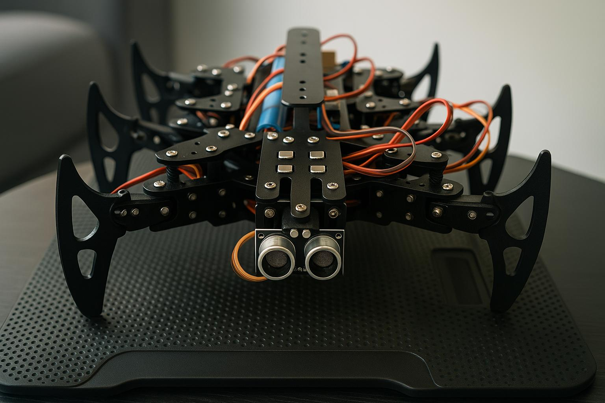
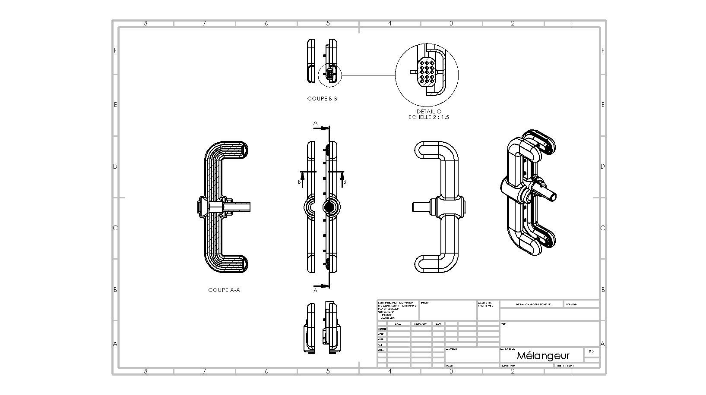
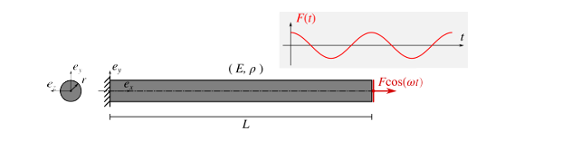

Mes Projets
Quelques projets réalisés durant mon parcours en génie mécanique.

Robot Hexapode
Conception d’un robot hexapode autonome pour les interventions en milieux hostiles.

Optimisation topologique
Re-design d’une pièce mécanique pour l’impression 3D (LPBF) avec Fusion 360 et Netfabb.

Expérience Innovation Crunch Time
Participation à l'organisation technique et logistique de la FIMU.

Étude de flambement
Analyse du flambement d’une poutre hyperstatique avec modélisation en C# et éléments finis.